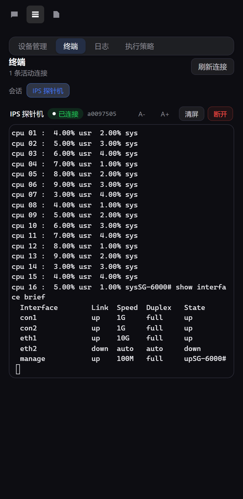
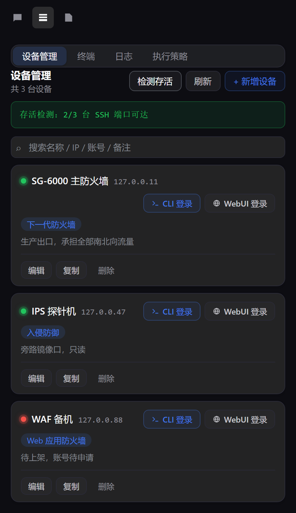
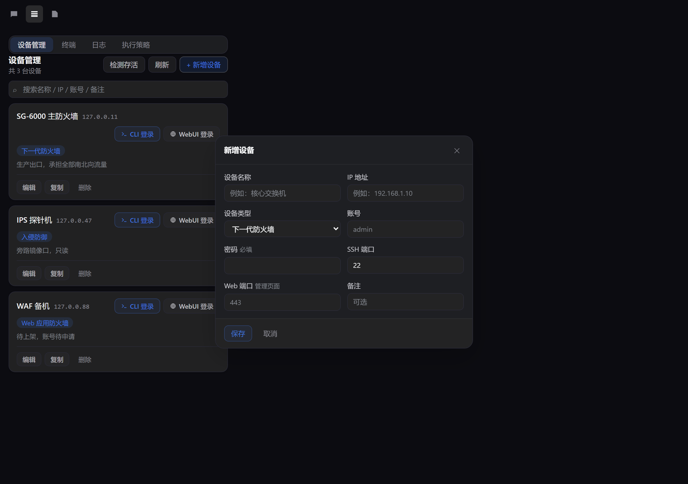
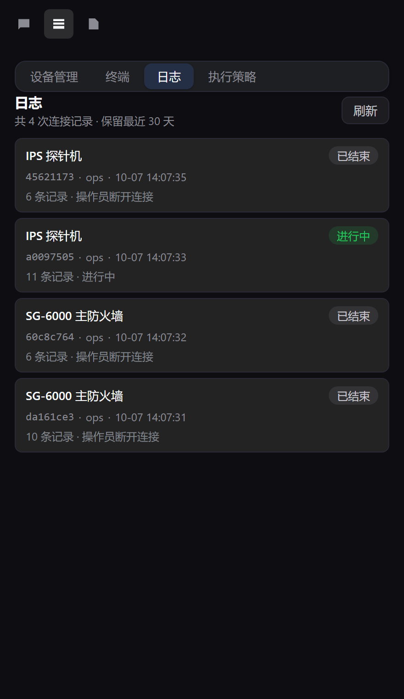
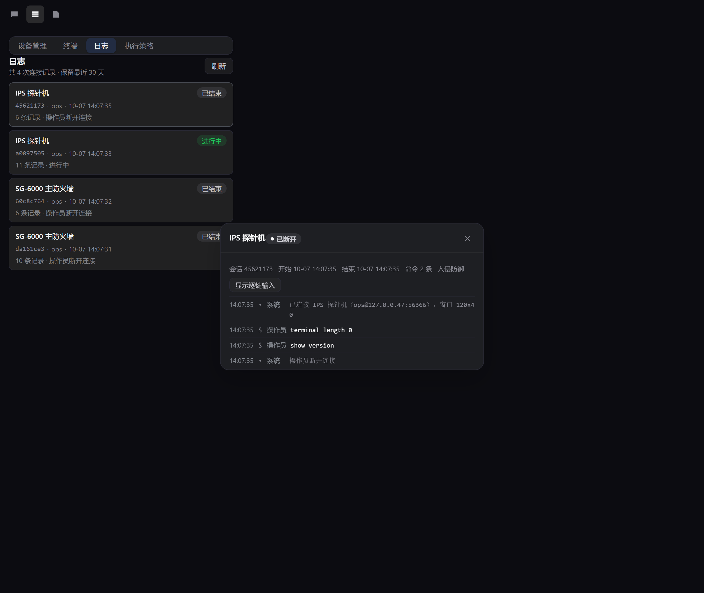
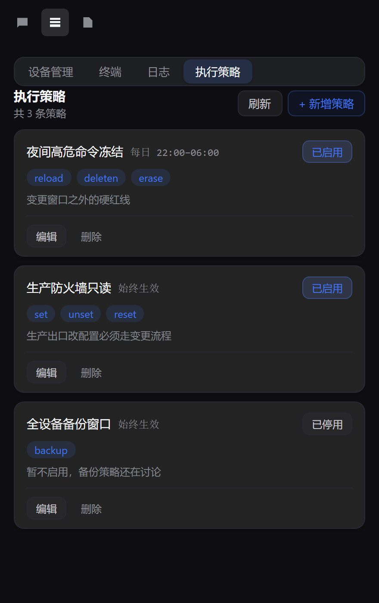
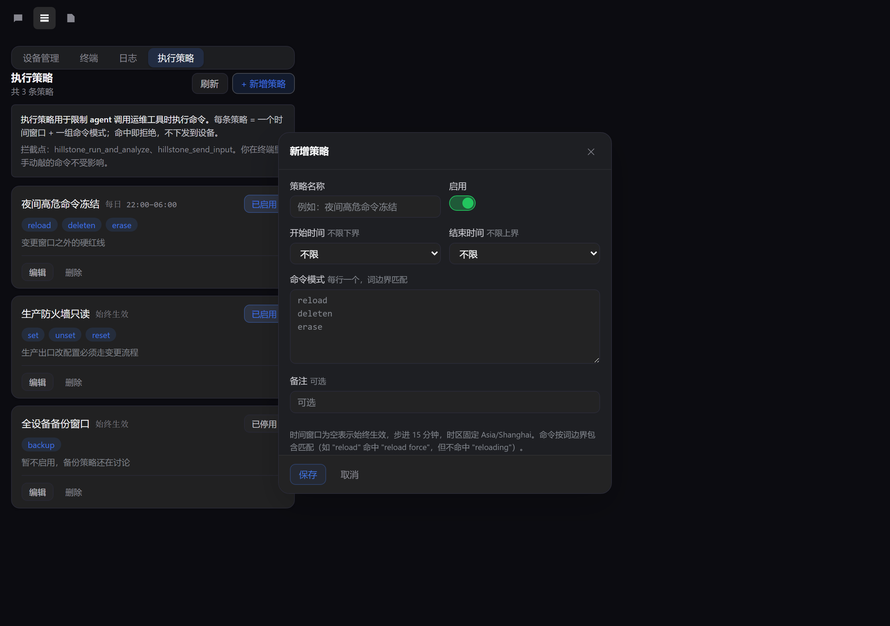

面板
插件在右侧栏注册一个「设备运维」标签页，内含四个子标签。连接建立后，面板会 自动切到「终端」——你落在实时会话上，而不是那个唯一说明不了「agent 现在在设备上 干什么」的设备列表。
设备管理
设备的增删改查、搜索分页。名称行右侧是 CLI 登录 与 WebUI 登录 两条入口，名称前有存活状态灯：绿=可达、 红=不可达，首次启动不显示。展开 →
终端
每条活动连接一个 xterm.js 终端。输入发给宿主，设备输出经 SSE 流回面板。
日志
每次连接的审计记录：谁连了哪台设备、输入了什么、执行了哪些命令、会话何时因何结束。 展开 →
执行策略
由你书写的规则：时间窗口绑定命令模式，命中即在 agent 执行入口拒绝。对设备零影响。 展开 →

设备管理
设备列表要在一瞥之间回答两个问题：这台设备现在还活着吗，以及 我（或助手）接下来怎么进去。名称与 IP 合并成一行，账号 / SSH 端口 / Web 端口 收进编辑表单，不占列表的横向空间。


存活状态灯
名称左侧的小圆点由面板的「检测存活」按钮驱动：它对每台设备的 SSH 端口做一次 TCP 连接测试，不建立 SSH 会话，因此不会触发设备的登录审计。 绿=可达并显示握手耗时，红=不可达，灰=检测中。鼠标悬停会给出 refused / timeout / unreachable 的具体原因——那才是让人知道下一步该做什么的信息。
两条登录入口
| 入口 | 做什么 | 结果 |
|---|---|---|
| CLI 登录 | 宿主用 ssh2 建立 pty 会话，面板自动切到「终端」 |
一条出现在「终端」页的实时会话 |
| WebUI 登录 | 宿主开一个浏览器窗口并填好凭据登录设备管理页 | 卡片上回一个判定：已连接 / 需要验证码 / 失败 |
密码只保存在宿主，由宿主解密后使用，从不下发给面板前端，也从不写进任何返回值。 WebUI 登录失败不自动重试：StoneOS 在失败后要求图形验证码，反复尝试即使密码正确也会失败， 这时候需要你亲手去窗口里点一下。「复制」会以该设备的信息（含已保存的密码）预填新增表单， 适合批量录入同类设备——点保存才会真正创建。
日志审计
agent 能连设备、能在设备上敲命令，所以「它到底做了什么」必须留下一条事后可查的记录。 每条 SSH 连接都会写一份审计日志，即使你不在场。


记了什么
每次连接在 <dataDir>/oplog/<日期>/<connId>.jsonl 追加一份
JSONL：连接头（设备、账号、来源地址、窗口大小、开始时间）、每一条
input / command / event、以及结束行（结束时间、结束原因、总条数）。
逐键输入与整行命令分别记录，所以你能区分「sho」按了三次退格之后才敲成
show version，还是 agent 一次性下发了整条命令。保留最近 30 天。
来源标签是重点
| 标签 | 代表 |
|---|---|
运维员 | 你在「终端」页手敲的命令 |
agent | 助手通过工具下发的命令，以及被策略拦下的尝试 |
系统 | 连接建立、断开、连接失败等宿主事件 |
「逐键输入」默认折叠——原始按键流噪音很大，多数时候你要找的是「敲了哪些命令」。 需要复盘时再点开。
agent 事件，于是「它当时想干什么」同样可查。
执行策略
网络设备上有一些命令，你绝不希望它在凌晨三点被执行——而下命令的正是助手。 没有内置黑名单：规则由你自己创建、编辑、删除，宿主从不替你决定什么算危险。
一条策略长什么样
| 字段 | 说明 |
|---|---|
| 策略名称 | 展示用，例如「夜间冻结高危命令」 |
| 启用 | 停用后整条失效，但仍保留在列表里 |
| 开始 / 结束时间 | 下拉选择，步进 15 分钟；不限=始终生效；支持跨午夜（22:00–06:00） |
| 命令模式 | 每行一个，词边界包含匹配 |
| 备注 | 可选，展示在列表里，方便回忆规则意图 |
窗口只支持每天循环，不支持按星期几或具体日期——绝大多数「冻结窗口」都是日级的。
时区固定 Asia/Shanghai，界面上不再提供输入框。
多条策略之间叠加：任意一条已启用的策略命中，命令就被拒绝。
匹配语义：词边界包含、大小写不敏感
前缀匹配会过度拦截，正则则要求每个运维人员都去学一种语法。边界本身是 Unicode 感知的
（\p{L} / \p{N}），所以在中日韩文本周围表现一致。
哪些入口会被拦
| 入口 | 拦截 | 说明 |
|---|---|---|
hillstone_run_and_analyze |
✓ 拦 | 每条命令执行前过一遍策略，命中即返回 blocked |
hillstone_send_input |
✓ 拦 | 只检查即将提交的那一行；命中则不写入 pty |
人类在「终端」页手敲（/conn/input） |
✗ 不拦 | 这是策略作者本人，避免「自己把自己锁死」 |
console.warn 和一条带策略名与命中模式的
会话日志 event。任何东西都不会到达设备，因此没有「执行了一半」的
状态需要收拾。调用方拿到的结果里明确标注 blocked 与原因，便于 agent
向你转述。


9 个 agent 工具
这些工具让助手不必等你也能操作设备。它们注册在宿主的 tools 服务上，
并被回归套件和 bundle 门禁逐个断言契约——而不只是断言工具名存在。
hillstone_run_and_analyze批量执行命令，把输出连同自然语言目标交给宿主 LLM 分析。默认复用已打开的终端会话，可直接在标签页里看着它干活。hillstone_open_terminal打开一条 SSH 连接，拿到 connId 与实时输出流。hillstone_send_input向已打开的终端发送输入。裸命令自动补\r，单键与控制字符原样发送；显式submit优先。hillstone_get_output按字节游标增量读取输出，避免轮询 agent 盲目 sleep 或重读全文。hillstone_close_terminal关闭连接并记录结束原因。hillstone_list_sessions列出活动会话及其 connId。hillstone_list_devices列出已管理设备（不含密码）。hillstone_scan_liveness探测一台或全部设备的 TCP 可达性——与卡片状态灯同一套探测，返回 online/offline 与握手耗时。hillstone_web_login在浏览器中打开设备管理界面并用保存的凭据登录，返回 ready / captcha / error。密码只在宿主侧解密，不会回传。
为真机调过的几件事
下面这些不是从显而易见的猜测得来的，而是在真实设备上量出来的。
StoneOS 的分页器不是可选项
在真实的 SG-6000 上实测：show cpu detail 产生 9172 个字符，在
--More-- 处停了 13 次，而设备不输出任何 SGR 颜色序列。
真正咬人的是第二点：分页器会吞掉任何输入的东西——在它等待期间发送的命令会被
静默吞掉，工具于是一直挂到超时，而那条命令从未被执行。
因此 hillstone_run_and_analyze 会监测 --More-- 并用一个空格应答它。
WebUI 登录只尝试一次
设备的登录接口在密码错误时不仅返回错误，还会开始要求图形验证码，而且对正确密码 也不豁免。所以自动重试的登录第二次必然失败，看起来像「密码不对」，真相却是 「第一次错了，现在需要一个人」。因此登录只跑一次，把结论标为需人工完成并把窗口 留着，而不是重试到锁死。
密码永远不到达浏览器
设备密码用每个 profile 各自的密钥静态加密，只在宿主进程内解密。WebUI 登录的按钮是 服务端的：宿主解密后直接填进表单，只回传一个结论（已登录 / 需人工完成 / 失败）。 本插件的浏览器半边根本看不到密码。
侧边栏属于会话，而不是属于应用
DSH 的右栏是按会话的，每一次 openTab 都会经过
sessions.onScreen 解析。所以每条连接都带上「是谁发起的」这个身份
（originSessionId），并把展开动作路由到那个会话——否则 agent 在你读
另一个对话时去连设备，终端会弹到那里去。
弹窗居中，遮罩保持克制
三个弹窗（新增设备 / 新增策略 / 会话明细）都居中于整个窗口，与 DSH 自带的 告警中心设置弹窗一致。这一点改过一次：早期版本把弹窗贴在右栏边缘，理由是 「不打断阅读」。实测那样更像一块侧栏浮层而不是对话框，而且视线要横跨整屏才能 找到它。
但遮罩仍然不接管：背景没有模糊、也没有压暗，点它可以直接关掉弹窗，Esc 同样 有效。居中只是决定「弹窗在哪」，不等于「必须先处理弹窗」。这两种决定要分开做， 否则一个「更醒目」很容易滑向一个「更强势」。
截图也印证了这件事：弹窗那几张是在 1280px 的整窗宽度下拍的，而不是右栏的
440px。因为弹窗挂在 <body> 上、以窗口为中心——在 440px 宽里
「居中」和「撑满」是同一张图，居中的回归根本拍不出来。
安装
# 1. 克隆并构建 git clone https://github.com/jazhu/dsh-hillstone-cli-ops cd dsh-hillstone-cli-ops pnpm install pnpm run build # 重新生成 dist/（不入库） # 2. 装进你的 DSH profile pnpm pack && <你的 dsh 插件安装命令> ./dsh-hillstone-cli-ops-1.0.0.tgz
环境要求
Node 22+；一个暴露了 tools、slots、
sidebarRightTabs、sidebarRight、uiWorkspace
这些服务的 DSH 版本；以及 ssh2 / xterm（由 pnpm install 装好）。
一次典型的协作
- 你在面板里加好设备，点 CLI 登录，或者直接让 agent 去连。
- 面板自动切到「终端」，你能实时看着 agent 在设备上操作。
- 需要批量巡检时，agent 用
hillstone_run_and_analyze跑一批命令，结果交给宿主 LLM 分析。 - 如果它想执行你禁止的命令，而当前时间又落在你设定的窗口内，宿主在发出任何流量之前拒绝它，并把原因记进审计日志。
- 事后到「日志」页复盘：谁连的、输了什么、跑了什么、何时结束的。
开发
node node_modules/typescript/bin/tsc --noEmit # 类型检查 node build.mjs # esbuild 双产物构建 node test/terminal-regression.mjs # 离线端到端 node test/bundle-gate.mjs # 对构建产物做断言
请按这个顺序运行：bundle-gate 断言的是 dist/，一次失败的构建
否则会让它在上一次的产物上照样通过。回归套件会拿真实的产物对一个自建的假
StoneOS（走真实 ssh2）跑，其中包含一个会停在 --More-- 处
并吞掉在那里输入的任何东西的假分页器——与真机相同的失效模式。